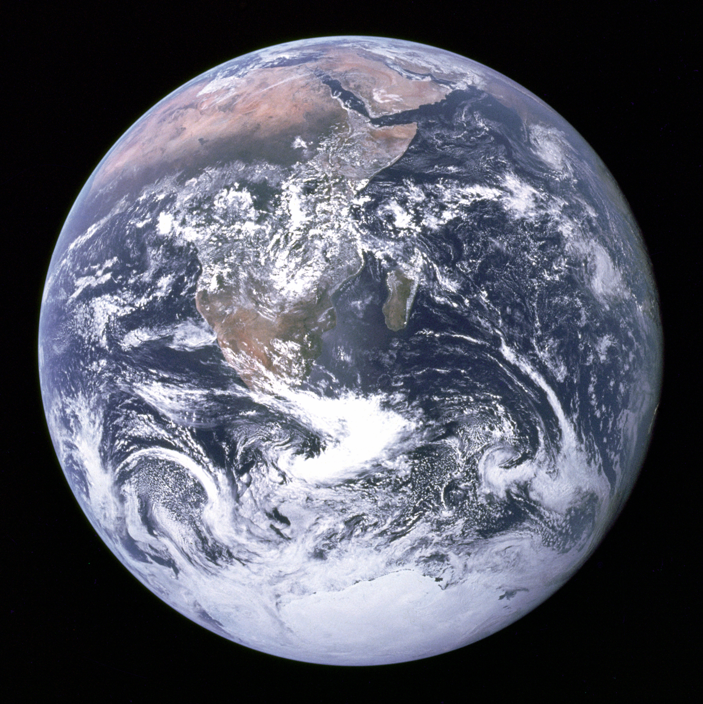
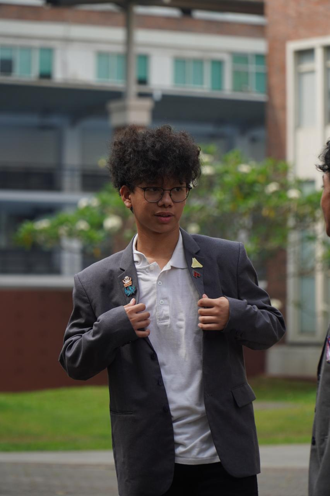

01 / WEB PAGE
HTMLFacts About Earth
Website informatif tentang Bumi, fakta menarik, perbandingan planet, dan video.
Hi, I'm Michael
I build and explore
things for the web.

Halo, saya Michael. Saya tertarik pada pengembangan website dan bagaimana teknologi dapat diwujudkan menjadi pengalaman digital yang nyaman digunakan.
Saya terus mengembangkan kemampuan melalui proyek sederhana dan eksperimen interaktif menggunakan HTML, CSS, dan JavaScript. Saya percaya setiap proyek adalah kesempatan untuk mempelajari hal baru.
Let's connectEksplorasi dan proyek web yang sudah saya kerjakan.

Website informatif tentang Bumi, fakta menarik, perbandingan planet, dan video.
Eksperimen CSS dan JavaScript dengan susunan kotak dan efek visual interaktif.
Teknologi yang digunakan dan terus saya pelajari.
Learn. Experiment. Improve.
Saya memulai dari memahami tujuan, menyusun struktur halaman, lalu mengembangkan tampilan dan interaksi. Setelah itu, saya menguji hasilnya pada berbagai ukuran layar dan memperbaiki detailnya.
HAVE AN IDEA OR JUST WANT TO SAY HI?
Ganti alamat email contoh pada file index.html dengan alamat kamu agar tombol ini bisa dipakai.